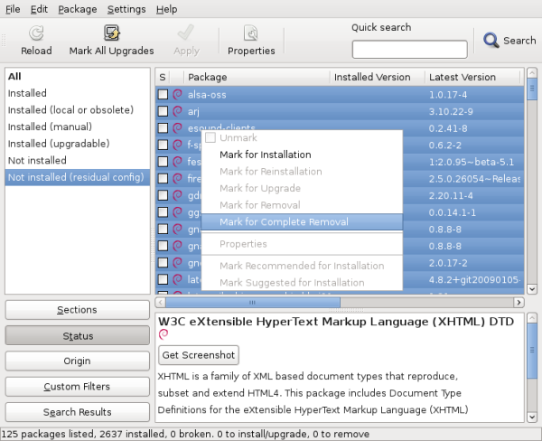

If you like to keep your place clean, you probably want to do the same with your computer. I’m going to show you a few tips over the next 4 weeks so that you can keep your Debian/Ubuntu system free of dust!
Over time the set of packages that is installed on your system changes, either because you install and remove stuff, or because the distribution evolved (and you upgraded your system to the latest version).
But the Debian packaging system is designed to keep configuration files when a package is removed. That way if you reinstall it, you won’t have to redo the configuration. That’s a nice feature but what if you will never reinstall those packages?
Then those configuration files become clutter that you would rather get rid of. In some cases, those files lying around might have unwanted side-effects (recent example: it can block the switch to a dependency-based boot sequence because obsolete init scripts without the required dependencies are still present).
The solution is to “purge” all packages which are in the “config-files” state. With aptitude you can do aptitude purge ~c (or aptitude purge ?config-files). Replace “purge” by “search” if you only want to see a list of the affected packages.
If you want a machine-friendly list of the packages in that state, you could use one of those commands (and then pass the result to apt-get if you don’t have aptitude available):
$ grep-status -n -sPackage -FStatus config-files
[...]
$ dpkg-query -f '${Package} ${Status}\n' -W | grep config-files$ | cut -d" " -f1
[...]
Note that grep-status is part of the dctrl-tools package.
Of course you can also use graphical package managers, like Synaptic. Click on the “Status” button on the bottom left, then on “Not installed (residual config)” and you have a list of packages that you can purge. You can select them all, right click and pick “Mark for Complete Removal”. See the screenshot below. The last step is to click on “Apply” to get the packages purged.

Do you want to read more tutorials like this one? Click here to subscribe to my free newsletter, you can opt to receive future articles by email.


Great post! Already looking forward to reading the next one, thanks!
Nice one! Hope the next ones are as good as well and some annoying side effects on my system will finally be fixed
Nice article… I’ve been using Debian since it was created. People nowadays need more articles like that in order to educate themselves and get into the linux community.
The only OS that really deserved every penny of mine is of course Debian GNU/Linux -Yes, I bought it even if I didn’t had to…. I am a linux expert myself, and have students that REALLY appreciate the Linux world.
Bye bye now…
Hi,
Delete the old configuration files:
for i in `dpkg -l | grep ^rc | cut -d” ” -f3`
do
dpkg –purge $i
done
and delete orphan packages:
dpkg –purge `deborphan`
Saludos.
That’s another way to do it but I described how to do it with aptitude/synaptic because that’s what most users already use daily. Direct usage of dpkg is rarely needed for most users.
Is used by rarely users
Good post.
Ta, a very useful tip.
I usually purge packages but I don’t always, and I know it leaves cruft behind. I don’t like orphaned stuff as it bites you in the arse when you least expect it.
My list is scarily long. And contains packages I know I originally spent some effort in configuring. I want to keep any config files I have modified. But any config files still matching the package md5sums should be deleted. I don’t think dpkg does this automatically when normally removing a package. Perhaps it should. If it doesn’t, then can you think of a way to delete those stale config files that do match the stored md5sum?
dpkg does not do this because “removing the configuration file” is exactly like “modifying the configuration file” in dpkg’s eyes.
That said you could write a script scanning all the packages in “config-files” state, using
dpkg-query -f '${Conffiles}' foo(replace foo with the real package name) to get the md5sums of the conffiles, and doing the check on the installed file.For Ubuntu and Linux Mint users (I don’t know, it might work in Debian, too), there is also Ubuntu Tweak. Run the application and click on Package Cleaner. It gives you the option of cleaning out packages that were dependencies of removed programs, the .deb cache, configuration files of removed programs, older kernels that might still be installed, etc. Very nice, easy interface.
Also, it’d be nice to show Linux Mint some love! I hear lots about Debian and Ubuntu, but not Mint. Linux Mint takes Ubuntu’s user friendliness and pushes it one (or more) step(s) further. Great distro! Just saying…
Superb article, stylish webpage theme, maintain the great work
don’t forget aptitude:
sudo aptitude
- now press “l” (this is lowercase L)
- enter “~c” (limit list to “removed, but config-files still present (ie, not purged)”)
- press “_” (mark for purge)
- press “g” twice
Congrats, you are clean now.
Sinply invoke aptitude as follow:
# aptitude purge ~c
Excellent tip! You should submit it as an entry for the fortunes-debian-hints package http://wiki.debian.org/FortunesDebianHints
This shows how to get rid of configuration files for packages you’ve removed but not purged. You might consider discussing how to remove configuration files that existed in old versions of a package and no longer exist in the current version. dpkg currently preserves such configuration files.
That’s true but packages are supposed to get rid of them with some code in their post installation script (usually using dpkg-maintscript-helper or something similar).
dpkg keeps track of those files, this command will give you a complete list:
dpkg-query -f '${Conffiles}\n' -W | awk '/ obsolete$/ { print $1 }I’m not convinced it’s advisable to remove them automatically…
Handy snippet, thanks! I’d forgotten that dpkg notes “obsolete” configuration files specifically.
As for removing them, I think the same principle applies as when upgrading them: do so automatically if unchanged, prompt otherwise.
Great article.
It’s fine to remove the config files with the above described commands BUT some people might wanna know which files exactly are affected by the
purgeIf you have your list of affected packages you can use
dpkg -L package-nameto get a list of the affected files.Note: However
purgewill delete the files but will leave the empty folders behind…Thanks Michael. For empty folders, it happens but it’s not always the case. It all depends whether the directory was empty or not at the time dpkg tried to remove it. In some cases, it’s not but the remaining files are removed by the postrm script of the package.
Bonjour,
I don’t recall “how” exactly I deleted some packages but I still
have some files from no more installed packages in my
~/.config$ ls
autostart inkscape lxterminal ristretto Trolltech.conf xarchiver
enchant leafpad mousepad squeeze user-dirs.dirs xfce4
epdfview libfm openbox Terminal user-dirs.locale xfce4-dict
gpicview lxpanel parcellite Thunar vlc xfce4-session
gtk-2.0 lxsession pcmanfm totem wpa_supplicant xmms2
e.g.
~/.config/inkscape# ls
extensions-errors.log icons palettes templates
extensions keys preferences.xml
~/.config/parcellite# ls
parcelliterc
~/.config/Thunar# ls
accels.scm thunarrc volmanrc
~/.config/vlc# ls
vlc-qt-interface.conf vlcrc
~/.config/ristretto# ls
ristrettorc
~/.config/xfce4-session$ ls
xfce4-session.rc xfce4-splash.rc
and so on (…)
dpkg -l | grep ^rc and all the above commands you mention do not print anything
and aptitude lists those pkgs as not installed
do you have an idea why it is so?
merci
The packages never modify user configuration files in $HOME. And since many application create such files as soon as you execute them, you inevitably ends up with many configuration files. There are other application to help you clean your home directory but in general it doesn’t hurt much to keep those around.